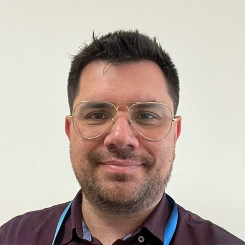
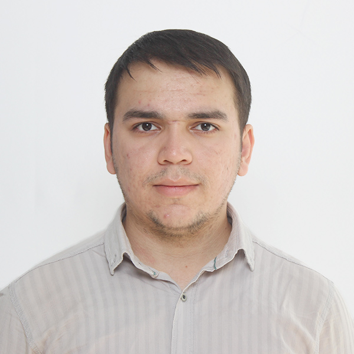

Members and affiliates
The lab is interdisciplinary by construction: mechanics, imaging, machine learning and quantum. Around it, the π Lab network gathers researchers from across the Faculty — engineering, computing, soils, pharmaceutical and biological science — and beyond.
The lab
Researchers based in the group at the University of Greenwich.


π Lab network
The network reaches across five schools and institutes of the University of Greenwich — engineering, computing, soils, pharmaceutical and biological science.
Sebastian Blair
Lecturer in Electrical, Electronic and Computer Engineering
School of Engineering
Mohammad Majid al‑Rifaie
Associate Professor in Artificial Intelligence
Computing & Mathematical Sciences
Barbara Tiddi
Lecturer in Applied Ecology and Environmental Sciences
Natural Resources Institute
The affiliate list grows as the network does. If you collaborate with us and would like to be listed, get in touch.
Room for one more.
We take on PhD researchers, postdocs and industrial partners working at the intersection of imaging, mechanics and machine learning.